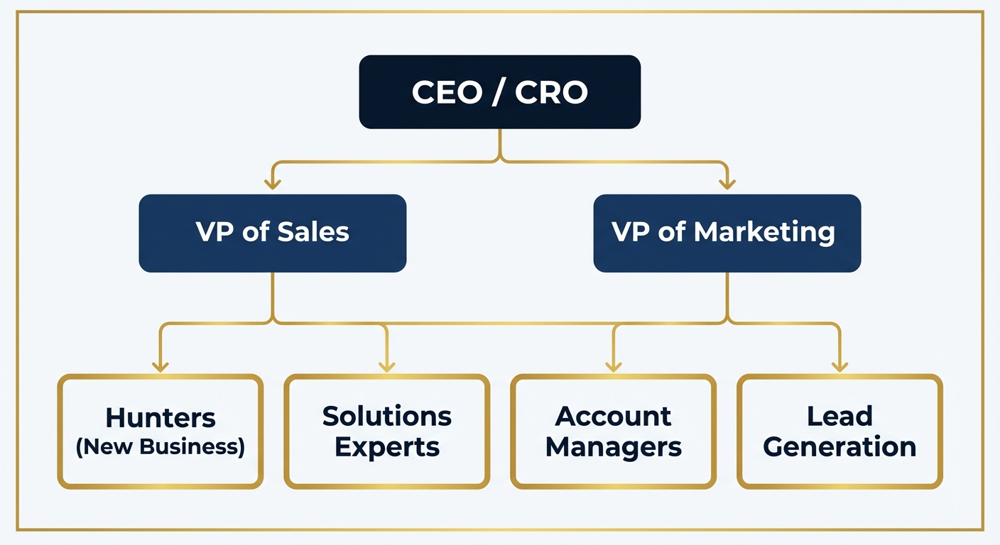
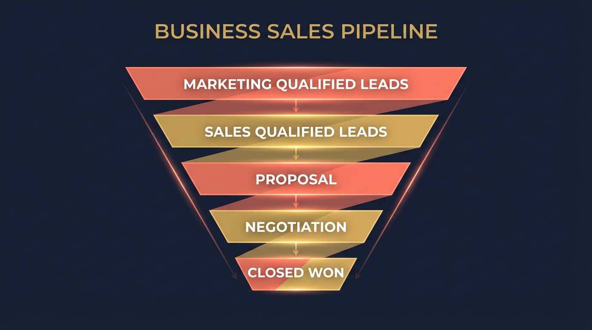
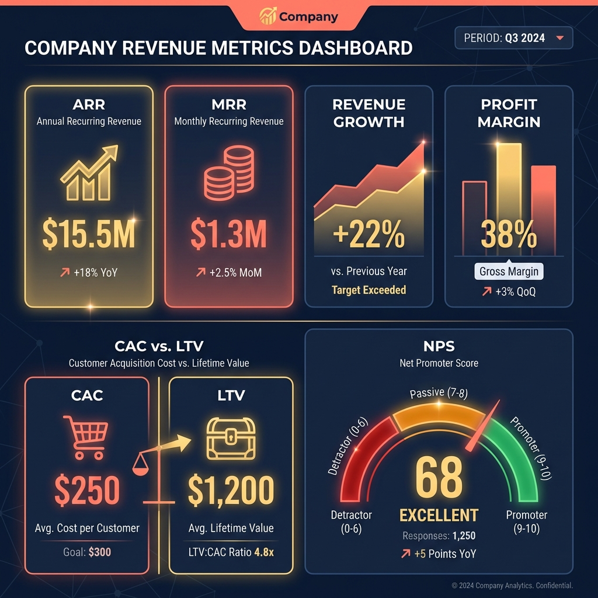

Part 1: The Sales Mindset
If you came from academia, government, or the sciences, "sales" probably carries some baggage. The pushy car salesman. The telemarketer who calls during dinner. The person in the ill-fitting suit making promises they can't keep.
Discard all of that. The thing those images have in common is desperation, and desperation is what happens when a salesperson has nothing real to offer. When you have something valuable, sales becomes a different activity entirely: finding the person who needs what you have, and connecting those two things.
Your instructor's thesis — and it runs through every session, every example, every story in this material — is this: sales is the most important skill in business, and it is the hardest one for people from the academic world to accept. The faster you internalize it, the better your career will go. Period.
Every Problem Is a People Problem
In academic and scientific environments, problems tend to be technical. The experiment failed. The model overfit. The data pipeline broke. Fix the thing, and you've solved the problem.
In business, every problem eventually becomes a people problem. A project that isn't delivering? Someone isn't communicating well, or isn't bought in, or doesn't have what they need to succeed. A product that isn't selling? Someone isn't reaching the right audience, or isn't articulating the value, or hasn't established enough trust. A team that isn't executing? A manager hasn't aligned them on the goal.
Sales, at its core, is the skill of solving people problems. That's why your instructor says it so plainly: the sales mindset will move you forward in a career faster than almost any technical skill. It doesn't replace technical expertise; it amplifies it. An expert who can communicate value, build relationships, and bring people along is an expert who gets to keep doing the work they care about.
The Zero-Sum Trap
There is a particular disease common in competitive academic environments, and it looks like this: every interaction is a status evaluation. If you are better, I am worse. If my paper is cited more, yours is cited less. One person wins; one person loses. Economists call this a zero-sum game.
Sales is the opposite of this. In a real sale, both parties end up better off. The buyer gets something they needed. The seller gets paid. Value was created that didn't exist before the transaction. This is what economists call a positive-sum game: one plus one equals two instead of one plus one equaling zero.
The sales mindset means training yourself to look for the positive-sum outcome in every interaction. If you treat the person across from you as someone who has something to offer — knowledge, a connection, a perspective you don't have — you will find that they respond in kind. And over time, that becomes a reputation. People seek out positive-sum players. They remember them. They call them first when an opportunity opens up.
There's a story I've told many times about burned bridges. Early in my career, I was close to some people in a teacher's union, people who held influential positions — including the president of the union for a district of 100,000 people. Through some political missteps, I lost those relationships. I didn't just lose friends. I lost a network that connected to political offices, school board decisions, grant committees. Multiple professional doors closed at once because I had let a handful of relationships deteriorate.
The lesson isn't complicated: you don't know where anyone is going. The person who seems irrelevant to your career today may be the one who opens a door for you in ten years. Keep every door open that you can. It costs almost nothing to be decent to people, and the compound interest on that decency is extraordinary.
People Remember How You Made Them Feel
This is not original — your instructor credits it to Maya Angelou — but it bears repeating because it is directly applicable to building a sales-capable professional identity.
In academia, people remember what you said. They remember your argument, your data, your conclusions. Citations exist because the specific content matters.
In business, people remember how they felt in the room with you. Did they feel heard? Did they feel respected? Did they feel like their time was well spent? A technically mediocre meeting where people felt good about the conversation will often accomplish more than a technically excellent one where the presenter made people feel small or bored.
The practical implication: control your face, especially in the first weeks of a new role. You don't know enough yet to have opinions about people. Don't wear your reactions visibly. The person who said something you thought was obvious might be one of the most important allies you'll ever have. Give them the benefit of a neutral expression and learn about them before you form judgments you can't take back.
Your instructor offers this: when someone drives badly near you, your first instinct might be frustration. Try the alternative assumption: maybe that person just got a call that a family member is in the hospital and they're driving faster than they should because they're scared. You don't know. You almost never know what is going on in someone's world. The sales mindset treats this uncertainty as a reason for generosity rather than judgment. Strong, stable, non-reactive people feel safe to be around. People want to work with them, confide in them, and recommend them.
Sales as Leadership
The connection between sales and leadership is something academics often miss because they see leadership as a management function, a title, a position of formal authority. In business, leadership is also a sales function.
When a CEO walks into a company meeting and lays out the next year's mission, that is a sales pitch. When a manager convinces a skeptical team to adopt a new process, that is a sale. When a project manager gets five departments to agree on a timeline, they have closed a deal. The product being sold is the idea, the vision, the direction.
People who understand this get promoted. People who can get others to move, commit, and execute are worth more to any organization than people who can only do the work themselves. Doing the work yourself is table stakes. Getting ten people to do great work together is a skill organizations pay significant premiums for.
Key Takeaways — Part 1
- Sales is not manipulation; it is finding the person who needs what you have and connecting those two things.
- Every business problem is ultimately a people problem. Sales is the skill of solving people problems.
- Positive-sum games create value for both parties. Train yourself to look for that outcome in every interaction.
- People remember how you made them feel. Manage your reactions, especially early in a new environment.
- Leadership is a sales function. Getting people to move, commit, and execute is one of the most valued skills in business.
Think of three professional relationships in your life that feel zero-sum to you — competitive, guarded, or transactional.
- For each one, write one thing that person knows or has done that you genuinely respect.
- Write one thing you could offer them that would cost you nothing meaningful — a connection, a piece of information, a piece of recognition they haven't received.
- Make one of those offers in the next two weeks. Track what changes.
Part 2: The Sales Organization
Before you can participate in a sales culture, you need to know who does what and why. Every company structures its revenue function slightly differently, but the roles below appear in recognizable form almost everywhere.

The CEO Is the First Salesperson
This is the thing about small companies that surprises people who've only observed large ones: the CEO is almost always the top salesperson. Not symbolically. Literally.
I watched the CEO of my former company fly from our offices to Detroit to sit in a meeting at Quicken Loans. He didn't have to be there. His sales team was there. But Quicken was our largest customer, worth $15 million out of a $35 million revenue business. If that relationship went sideways, the math was brutal: nearly half the company's revenue, covering the salaries of a lot of people, gone. So the CEO was in every important room for that account. Not because anyone told him to be. Because he understood that the relationship was more important than any individual transaction, and only he could carry the weight of that commitment.
I've seen small-company CEOs jump fences — literally, physical fences — to not be late to a client meeting. That urgency is not dysfunction. It's the lived understanding that in a small business, every significant customer relationship is existential.
In larger organizations, the CEO may be insulated from day-to-day selling, but they're still responsible for the largest relationships and still show up for the biggest deals. The title changes; the accountability doesn't.
The CRO and Sales Management
The CRO (Chief Revenue Officer) is usually the top salesperson in a company large enough to have one. They set the sales methodology: who to target, how to approach them, how to price, how to measure success. Marketing typically reports to or works closely with the CRO, because marketing's job is to fill the top of the funnel the sales team then converts.
The CMO (Chief Marketing Officer) is worth noting separately: it has the shortest average tenure and the highest proportion of leaders who have no formal training in the field. Marketing attribution is genuinely hard, results are often delayed, and the role gets blamed when growth stalls regardless of cause. If you're considering a marketing-adjacent leadership role, understand that the accountability is real and the metrics are soft.
Sales managers own the execution. In large organizations they may be regional, covering geographies or industry verticals. Their job is part coach, part accountant: they help their reps work through deals, and they are responsible for forecasting how much revenue their team will bring in each quarter.
Hunters, Farmers, and the People Between
The most important distinction in any sales organization is between hunters and farmers, and understanding it will help you figure out where you fit.
Hunters find and close new business. They are wired for the chase. The best ones have a book of target accounts — the 25 companies they believe can become major customers — and they are methodical about moving through each one. Your instructor observed a hunter who was warm and easy-going in every social setting, but in an internal strategy meeting about an account, became one of the most focused, demanding people in the room. She knew exactly which accounts warranted her full intensity and deployed it accordingly. That precision is what separates elite hunters from average ones.
Farmers maintain and grow existing customer relationships. Your instructor's wife is in packaging sales, and her job is a textbook example of farming. She already has a relationship with a company that owns Clorox. Through years of consistent service and genuine curiosity about their business, she's in the conversation when new packaging needs come up, including a specialized sealing material used on every bottle of Clorox bleach. A new contract for that material, earned through relationship-building rather than cold outreach, is pure farming. She didn't go find a new customer. She made an existing one more valuable.
Hunters and farmers both carry risk, but it manifests differently. Hunters often have hard quotas, and missing them has real consequences. Your instructor watched salespeople get hired and fired in six-week windows at a marketing firm he worked for. The ones who exceeded quota went to Maui on the company's dime. The ones who didn't were gone. That is a tighter wire than anything in operations, finance, or product. The upside is real — commissions on large deals are substantial — but so is the floor.
Farmers live with a different risk: the relationship itself. If a farmer allows a customer relationship to sour, the whole account can walk. One difficult interaction, one unresolved issue handled badly, one internal problem surfaced at the wrong moment — these can undo years of goodwill. The farmer has to manage not just the relationship but every person inside their own company who touches that relationship.
Solutions experts (sometimes called solutions architects or technical sales) are the bridge between the hunter's promise and the delivery team's reality. They typically have a technical background — engineering, data science, product — and are brought into deals to answer the hard questions: can we actually do this? What would it take? How do we price something we've never sold before? They partner with hunters on complex deals where the customer's needs don't map cleanly to an existing product.
Account managers are the operational version of farmers. They manage the day-to-day relationship, coordinate internal resources to solve customer problems, and look for expansion opportunities within existing accounts. When a customer has a quality issue, the account manager is the one getting the quality engineering team on a call, managing the internal dynamics, and making sure the customer feels heard — even if the internal dynamics are difficult.
Lead generation specialists work the top of the funnel: identifying prospects, qualifying them, and passing the promising ones to hunters or account managers. They won't close the $10 million deal, but without their work, there's no pipeline to close from.
What Quantifiable Relationships Are Worth
One of the most important things to understand about a career in sales is that your relationships are a form of equity.
Experian sells credit data to major mortgage companies. The account manager who owns the Rocket Mortgage relationship at Experian can credibly say that they manage $30 to $40 million in revenue. Not because they built it alone — but because they've maintained it, grown it, and protected it over time. When that person writes a resume, they don't write their job title. They write the size of the relationships they owned. HR departments at other companies see "$30M book of business" and they respond.
The company my instructor worked for was eventually sold for $160 million. The revenue at the time was approximately $35 million. The multiplier was about five times revenue. The account manager who owned the $15 million Quicken relationship could credibly say they were responsible for $75 million of that sale. That's real equity — not a stock certificate, but a demonstrable business contribution that the market will pay to acquire.
Key Takeaways — Part 2
- In small companies, the CEO is the top salesperson — literally, not figuratively.
- Hunters find and close new business; farmers grow and retain existing accounts. Most organizations need both, and they require different personalities.
- Solutions experts bridge technical reality and sales promise. If you have a technical background, this is one of the highest-leverage roles in any company.
- Your customer relationships are a quantifiable asset. Build them deliberately and track their size.
- Sales has the highest upside and the lowest floor of any function. Go in with clear eyes about both.
Based on your personality and background, where do you most naturally fit in a sales organization?
- Write one paragraph describing your natural mode: Are you energized by new relationships and the pursuit of something that doesn't exist yet (hunter)? By deepening existing relationships and solving complex ongoing problems (farmer)? By translating technical complexity into something a non-expert can trust and act on (solutions expert)?
- Name one company in your target industry where you can identify what each role looks like in practice. Find the LinkedIn profiles of two people in those roles.
- Write one sentence that answers: "If I were in a client meeting tomorrow and had to add value, the specific thing I could offer is ___."
Part 3: The Sales Funnel
Every sale moves through stages. The exact names vary by company and industry, but the logic is universal: someone goes from not knowing you exist to giving you money, and that journey has predictable stops along the way.
Understanding the funnel matters because every stage has its own goal, its own skills, and its own metrics. The mistake most non-sales professionals make is treating every stage the same way — which usually means treating everything like a presentation, when most of it is actually listening.

Stage 1: Awareness
Before someone can buy from you, they need to know you exist. Awareness is created through marketing: advertising, content, conferences, referrals, press coverage, and word of mouth. In the digital context, it includes things like showing up in a Google search, appearing as a banner on a site someone reads, or being mentioned by someone they trust.
The companies that win at awareness don't just tell people they exist; they give people a reason to remember them. When Google became a verb, that was awareness compounding into cultural penetration. Most businesses operate at a much smaller scale, but the principle is the same: be where your customers are, consistently, with something worth noticing.
Stage 2: Interest and Consideration
Once someone is aware of you, the next question is whether they care enough to engage. Interest is measured in click-through rates, time on page, form submissions, email sign-ups. Consideration begins when someone starts actively evaluating whether your offering fits their need: downloading a white paper, requesting a demo, getting on a call.
For enterprise sales — business-to-business deals with long cycles and multiple stakeholders — this stage can take weeks or months. The salesperson's job here is to understand the buyer's actual problem as specifically as possible, and to assess whether the company can genuinely solve it. This is called qualification, and doing it honestly is one of the highest-leverage activities in any sales organization. Pursuing unqualified deals wastes everyone's time; real hunters learn to walk away from the wrong opportunities so they can sprint toward the right ones.
Stage 3: Intent
Intent is the moment a prospect signals they are likely to buy. They've asked for a formal proposal. They've introduced you to their procurement team. They've shared their internal budget timeline. The salesperson's job at this stage is to keep momentum moving forward while the solutions expert validates that the delivery team can actually fulfill what's being promised.
Stage 4: The Close
The close is where the signatures go on the dotted line. This is the hunter's domain. The skills required are negotiation, patience, timing, and the ability to address objections without capitulating on price. Closing a deal too cheaply — giving away margin to end the discomfort of negotiation — is a common failure mode for technically-oriented people who get pulled into deals. Know the floor, know the value, and hold it.
In a negotiation, salespeople often make the mistake of undercommitting to their forecast so they can exceed it and look good. Their manager does the reverse — presses for a higher number so the company can plan confidently. The gap between what the salesperson forecasts and what the company actually needs is one of the permanent tensions in sales culture. Your instructor's view: salespeople should commit to what they genuinely believe is achievable and then outperform it. Sandbagging the forecast corrodes trust with management faster than missing it.
Stage 5: Retention and Expansion
The sale doesn't end at the close. For most businesses, the most profitable customer is the one you already have. Retention — keeping customers satisfied enough to renew — is cheaper than acquiring new ones by a wide margin. Expansion — selling additional products or services to existing customers — is cheaper still.
This is farming territory. The best farmers build relationships deep enough that customers tell them about problems before they become crises, which gives the farmer the opportunity to solve them before a competitor hears about them.
Key Takeaways — Part 3
- Every stage of the funnel has a different goal and requires different skills. Applying the same approach to all stages is a common mistake.
- Qualification is one of the highest-leverage activities in sales. The ability to say "this isn't the right fit" saves everyone time and protects the company's reputation.
- Retention and expansion are cheaper and more profitable than acquisition. Most companies underinvest in them.
- When you get pulled into stage 3 (technical presentation), your job is to build confidence, not demonstrate how much you know.
Part 4: Revenue Metrics — The Numbers That Run the Business
You do not need to become a finance person. You need to be able to sit in a room where financial language is being used, understand what's happening, and know when the numbers being discussed are relevant to your work. That is a different and much more achievable bar.
What follows is the core vocabulary. Learn it. When you hear these terms in a meeting, you should know instinctively whether the news is good or bad, whether the number is big or small for the context, and what question to ask if you don't understand the implication.

The Big Picture Numbers
| Term | What It Means | Why It Matters |
|---|---|---|
| Revenue | Total money coming in the door before costs | The top line. Every other metric is derived from this. |
| Profit | What's left after all costs are paid | Revenue is vanity. Profit is sanity. A company can have massive revenue and still go bankrupt. |
| ARR | Annual Recurring Revenue — revenue that repeats year over year (subscriptions, contracts) | Defines the company's floor. Government contracts are almost entirely ARR. Investors love ARR because it's predictable. |
| CAGR | Compound Annual Growth Rate — how fast the business is growing year over year | A company growing 25% per year is worth multiples more than one growing 5%. CAGR drives valuation. |
| EBITDA | Earnings Before Interest, Taxes, Depreciation and Amortization | A proxy for operational profitability that strips out financing decisions and accounting choices. Used to compare companies across industries. |
| Margin | Revenue minus costs, expressed as a percentage | High revenue with thin margin is a fragile business. High margin is a defensible one. |
The Customer-Level Numbers
| Term | What It Means | Example |
|---|---|---|
| CAC | Customer Acquisition Cost — how much it costs to win one new customer | A mortgage company might spend $300 in mailers to close one $250,000 loan. At a 1% fee, that's $2,500 revenue on $300 spent. The math works. |
| LTV | Lifetime Value — expected total revenue from a single customer over the full relationship | An insurance customer who stays 10 years is worth dramatically more than one who churns after six months. LTV shapes who you go after. |
| LTV:CAC | The ratio of lifetime value to acquisition cost | The fundamental test of whether your business model works. LTV should be 3× CAC or better. Below that, you're paying more to acquire customers than they're worth. |
| Churn | The rate at which customers stop buying | A 10% annual churn means you lose 10% of your customer base every year before growing. High churn makes growth extremely expensive. |
| Conversion Rate | The percentage of prospects who take the desired next action | Out of 1,000 people who visit a landing page, 30 sign up. That's a 3% conversion rate. Each stage of the funnel has its own conversion rate. |
Metrics Specific to Your Business
Every business invents metrics for things that aren't captured by the standard vocabulary. Your instructor's former company used RPDMS: Revenue Per Marketing Dollar Spent. It was specific to their client relationships in financial marketing and told them something the standard metrics didn't.
When you join a company, learn their proprietary metrics within the first 90 days. Ask your manager: "What's the one number that tells you whether we're having a good week?" The answer to that question will tell you more about how the business actually runs than any org chart or strategy document.
How Revenue Drives Valuation
Companies aren't valued by their revenue alone. They're valued by revenue multiplied by a market-determined factor that accounts for growth rate, margins, and predictability. Your instructor's company was sold for $160 million when it was generating approximately $35 million in revenue: roughly a 5x multiple.
The practical implication for you: the account manager who owned a $15 million customer relationship didn't just generate revenue. They generated approximately $75 million of the company's eventual sale price. If you ever wonder why certain sales relationships are treated with extraordinary care, this is the math behind it.
Forecasting is taken very seriously because it's how the business plans. If the sales team forecasts $8 million next quarter and delivers $5 million, that's not just a miss — it's a planning failure that ripples through hiring, procurement, and cash flow. Your instructor's observation: measurement outside of finance is often loose and context-dependent. But revenue measurement is tight. When the money shows up, everyone knows it. When it doesn't, everyone knows that too.
Key Takeaways — Part 4
- ARR defines the floor. CAGR defines the trajectory. Together they drive valuation.
- LTV:CAC is the most important ratio in any subscription or recurring-revenue business. Know it for your target industry.
- Every company has proprietary metrics. Learn them in your first 90 days.
- Revenue × multiplier = company value. Owning major customer relationships makes you a significant contributor to that equation.
- Forecasting matters because it drives planning. A missed forecast isn't just a sales problem — it's a company-wide problem.
Pick one publicly traded company in your target industry.
- Find their most recent earnings report (search "[company] Q4 earnings press release"). Identify: total revenue, year-over-year growth rate, and any mention of ARR or recurring revenue.
- Find one analyst comment on whether that quarter was good or bad, and what metric drove the judgment.
- Calculate: if you were an account manager owning 10% of their revenue, what dollar value would you put on that relationship? What would a 5x multiple make it worth?
Part 5: Building Your Sales Approach
By now you understand what sales is, who does it, how the funnel works, and what the numbers mean. What remains is the practical question: how do you build a sales-capable presence in the world, regardless of your job title?
Know the Mission, the Pitch, and the Value Proposition
Before you can sell anything — including yourself — you need to know three things about the organization you're part of:
- The mission: why the company exists, stated in terms a stranger would understand
- The pitch: the two-sentence version of what the company sells and who it's for
- The value proposition: what specific problem the company solves better than the alternatives, and for which customer
Most people who work in a company cannot say all three clearly. The ones who can are the ones who get pulled into important conversations, invited to external meetings, and trusted with strategic responsibilities. Learning these three things within your first 30 days is one of the highest-return investments of your time.
You Can Sell Without Being in Sales
Your instructor's recommendation — and it's an unusual one — is to ask in your first interview whether there's a way to get close to the sales process, even if the role you're interviewing for has nothing to do with selling. Almost every business wants everyone to sell, and almost no one ever asks if they can help. The question alone distinguishes you.
Here's what that looks like in practice:
- Attend a client-facing presentation and take notes on what questions the customer asks. Feed those back to the product or marketing team.
- Present at a conference or meetup in your domain. Visibility in a professional community is awareness creation, which is the top of the funnel.
- Write a white paper, a blog post, or a case study. Content that demonstrates your company's expertise attracts inbound leads.
- Start a professional community. Your instructor tells the story of a salesperson at Posit (the data science software company) who runs a weekly one-hour data science hangout, no sales pitch, no product placement. Just a professional conversation where data scientists talk to each other. That hangout has become her most valuable sales tool, because the people who attend associate her name and her company with their development.
Conferences Are Not What You Think
Academic conferences are about presenting research to peers. Business conferences are about meeting people who might become customers, partners, or referral sources. The two experiences look similar from the outside — presentations, posters, networking events — but the purpose is fundamentally different.
The more businesslike the conference, the more likely it is to generate commercial outcomes. Your instructor attended a medical informatics conference where academics presented to other academics about hospital systems. Almost no buying happened. His wife attends Pack Expo — a packaging industry trade show where automated filling equipment runs in full demonstration on the conference floor and companies actively negotiate contracts in the booths. The difference in commercial activity is not small.
As you assess conferences to attend, ask: is this conference where buyers go, or where practitioners go? Both have value, but only one of them is a sales opportunity.
Credibility Alone Doesn't Sell
A publication record, a conference presentation, a list of credentials — none of these create sales by themselves. They create credibility, which is a prerequisite for sales but not the sale itself. The company your instructor works for has publications, conference presentations, and legitimate domain expertise. None of it generates inbound revenue without active marketing that points people toward the evidence.
Credibility plus visibility creates sales. Credibility without visibility is a tree falling in an empty forest.
Partnerships and the Multi-Channel Approach
For most businesses, revenue doesn't come from one channel. It comes from several: direct sales, channel partners (other companies that sell your product to their customers), inbound leads from content and search, referrals from satisfied customers, and conference-generated relationships. Each channel requires different investment and produces different quality of lead.
Understanding which channels produce the best customers — lowest CAC, highest LTV, fastest to close — is one of the most valuable strategic skills in any company. It tells the business where to concentrate its investment. If you can bring that analysis, you become valuable beyond whatever your nominal role is.
Key Takeaways — Part 5
- Know the mission, the pitch, and the value proposition within 30 days of starting any new role.
- Ask to get close to the sales process even if your role isn't in sales. Almost every business wants this and almost no one asks.
- Credibility without visibility doesn't produce revenue. You have to market the credibility.
- Business conferences are sales environments, not academic ones. Approach them accordingly.
- Multi-channel revenue is more resilient than single-channel. Understanding which channels work best makes you strategically valuable.
For a company in your target industry:
- Identify at least three channels through which they acquire customers (website, referrals, direct outreach, partnerships, conferences, advertising). Find evidence of each — a LinkedIn post, a press release, a conference listing, a case study.
- For each channel, make your best estimate of whether it produces high or low LTV customers. Justify your reasoning.
- Write one sentence about where you personally could contribute to one of those channels, given your background.
Part 6: The Sales Skills You Already Have
If you came from government, academia, or the non-profit sector, you've been selling your entire career. You've just been calling it something else.
| What You Called It | What Business Calls It |
|---|---|
| Grant writing | Proposal development and value articulation |
| Thesis defense | Executive presentation under pressure |
| Conference presentation | Thought leadership and awareness creation |
| Getting a research partner to collaborate | Partnership development |
| Convincing a funding committee | Stakeholder management and close |
| Navigating a tenure review | Managing a multi-stakeholder qualification process |
| Getting IRB approval | Regulatory compliance and risk negotiation |
The skills are there. The translation is what's missing. Every one of the activities above required you to understand your audience, make a case for your work's value, address objections, and bring someone to a decision. That is a sales process.
What to Build From Here
- Outcome language. Translate every project you've worked on into a business outcome sentence: "I did X, which produced Y, which meant Z for the organization." The deliverable doesn't count. The downstream impact does.
- Commercial awareness. Start reading about revenue — your target company's earnings reports, industry news, competitive dynamics. Being able to discuss a company's commercial situation is table stakes for a sales-adjacent role.
- Relationship intentionality. Academic networking is largely reactive. Business networking is proactive. Identify five people in your target industry and find a genuine reason to reach out: a question, a piece of their work you found valuable, a mutual connection. Start the relationship before you need it.
The skills you built in academia and government are real. The gap is in framing. You've been solving problems for years. The question is whether you can describe those solutions in a language that business people recognize as valuable.
Key Takeaways — Part 6
- Grant writing, thesis defense, conference presenting, and committee navigation are all sales processes in academic language.
- The skill is there. The translation is missing. Build your outcome language first.
- Start commercial reading immediately: earnings reports, industry newsletters, competitive news.
- Proactive relationship-building is a business norm. Start before you need the relationship.
Book Recommendations
These are the books your instructor references directly in the course material, plus others that extend the same thinking. Each has something specific to offer people coming from outside the sales culture.
On the Sales Mindset
How to Win Friends and Influence People — Dale Carnegie
The reference that opens the course material for good reason. Not a manipulation manual — a framework for treating people as the beings they actually are: people who want to feel understood and valued. Short, dense with usable insight, and worth reading even if the title makes you suspicious. Your instructor's view: the faster you internalize this, the faster your professional relationships will improve.
To Sell Is Human — Daniel Pink
The case that everyone is in sales, whether or not they carry the title. Pink reframes what sales actually is — not persuasion, but moving people — and backs it with research on what actually works. Particularly useful for people who have been telling themselves they're "not salespeople."
Networking for People Who Hate Networking — Devora Zack
Explicitly written for introverts and analytical thinkers who find networking exhausting. The premise: networking works differently for different personality types, and the extrovert model is not the only valid one. If the thought of working a room makes you anxious, this book gives you a framework that fits how you actually operate.
On Negotiation and the Close
Never Split the Difference — Chris Voss
The former FBI hostage negotiator explains how to negotiate under pressure. Voss's central insight — that negotiation is about understanding the other party's emotional reality, not splitting a mathematical difference — is directly applicable to sales, salary conversations, and any situation where two parties have different interests. One of the most practically useful negotiation books written in plain language.
Negotiate Like a CEO — Patrick Bet-David
On the long-term thinking that governs how real deal-makers approach commitments. Small businesses and startups in particular make the mistake of agreeing to do too much for too little. This book is about understanding the value you're providing before you name a price — and holding to it.
SPIN Selling — Neil Rackham
The research-backed methodology that defined consultative selling. Based on analysis of thousands of actual sales calls, Rackham shows that the techniques that work in small sales (enthusiasm, aggressive closing) actively harm performance in large, complex sales. The SPIN framework — Situation, Problem, Implication, Need-payoff — gives you a structured way to diagnose customer needs before proposing solutions. Required reading before any enterprise sales role.
On Persuasion and Human Dynamics
Influence: The Psychology of Persuasion — Robert Cialdini
The definitive book on what moves people to say yes. Cialdini's six principles — reciprocity, commitment, social proof, authority, liking, scarcity — appear in every marketing campaign, every sales script, and every negotiation ever conducted. Reading this book doesn't make you a manipulator; it makes you literate in the dynamics that are already shaping your decisions and others' perceptions of you.
The Art of Seduction — Robert Greene
Your instructor includes this with a specific note: not recommended as a manipulation toolkit, but as a study of how persuasion operates at a deeper level than logic. Greene documents the psychological mechanisms behind attraction and influence with historical examples spanning centuries. If you want to understand why some people seem to move rooms without apparent effort, this book has the taxonomy.
The Challenger Sale — Matthew Dixon & Brent Adamson
Based on a large study of sales performance, Dixon and Adamson found that the top performers weren't the relationship-builders or the hard closers — they were the salespeople who challenged customers' thinking. "Challengers" bring new perspectives to customers' problems, reframe how customers see their own situation, and push back constructively on customer assumptions. For analytically-minded people making the transition into sales, this profile is where you naturally fit.
Reflection Questions
Write your answers. Specificity is what makes these valuable, not polish.
1. Where in your academic or professional life have you already sold something — an idea, a proposal, a project, a collaboration — without calling it sales? Describe it in business terms: what was the problem, who was the buyer, how did you make the case, and what was the outcome?
2. Are you more naturally a hunter, a farmer, or a solutions expert? What is the evidence from your own history that points to that answer?
3. Think of a professional relationship you've neglected or let go cold. What would it cost you to re-engage it genuinely — not to get something, but to offer something? What could you offer?
4. What is your current LTV:CAC intuition about yourself as a hire? How much does it cost a company to recruit and onboard you, and how long would it take to generate clear return on that investment? What would make that ratio better?
5. If you had to close one deal in the next 90 days — getting someone to say yes to something that matters to your career — what would that deal be, who is the buyer, and what is the one thing you'd need to understand about their situation before you make the ask?
Your 30-Day Action Plan
Commitments for the Next 30 Days
Week 1 — Vocabulary and Metrics
Three revenue metrics I will learn this week (define, find a real-world example, understand the good/bad range for my target industry):
Week 2 — Relationships
Three professional relationships I will re-engage or start this week, with a specific thing I will offer each one before I ask for anything:
Week 3 — Visibility
One concrete action I will take to increase my professional visibility: a post, a presentation proposal, a meetup, a white paper outline, a conversation at a conference:
Week 4 — The Pitch
My two-sentence professional pitch — what I do, for whom, and what changes because of it — practiced until I can deliver it without thinking:
Next: Workbook 3 — The Value Dimension: How Businesses Create, Deliver, and Capture Value
Class2Career © 2026 — Ignis Spindler, PhD